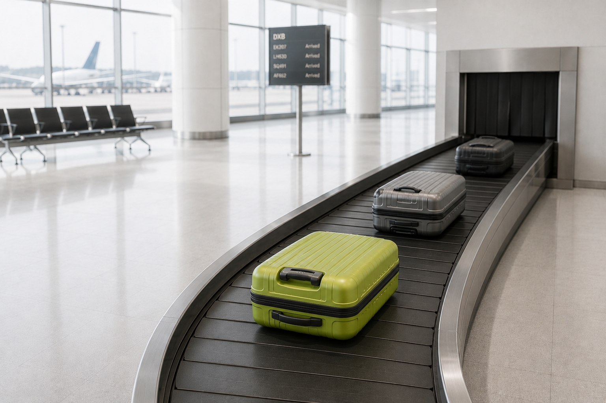
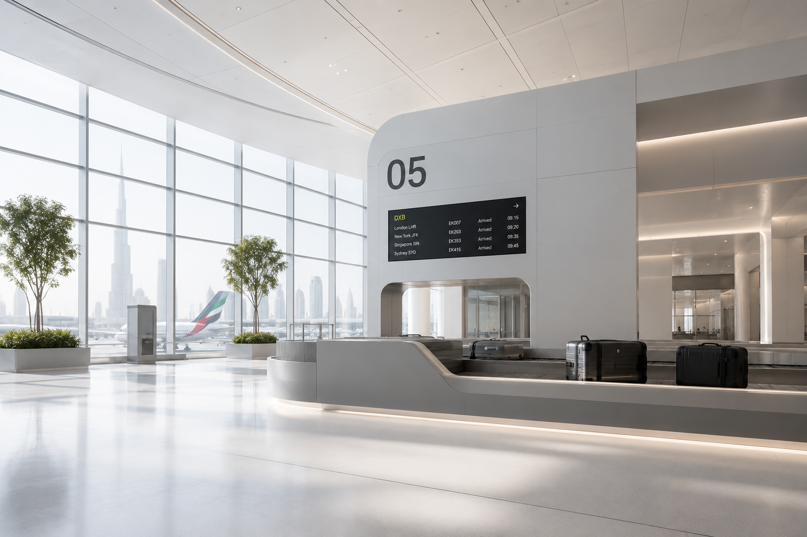

Baggage Visibility Infrastructure
BagMonitor monitors bag movements across the entire journey, so a transfer about to fail surfaces as an alert while ground ops can still act on it.
Monitoring baggage operations at hub airports across three continents
The cost of invisibility
The single largest source of delayed bags, at the exact handoff where tracking goes dark.
Compensation, tracing, courier returns and recovery, every year.
Mishandled worldwide, scaling with passenger volume.
Airlines planning real-time bag tracking, which requires the infrastructure first.
The platform
A complete digital identity for every bag, updated at each handling point from check-in to claim. Augments your DCS and BRS through secure APIs, with no rip-and-replace.
SLA monitoring and risk alerts fire at the transfer points where bags actually go missing, early enough for ground ops to re-route, re-tag, or hold a load.
Route analytics and bottleneck detection score transfer risk before a connection is missed, turning raw tracking data into operational decisions.

Connection window 31 min. Bag rebooked to T3 carousel automatically.
Most bags are lost at transfer, in the minutes when no one is watching. BagMonitor watches that window and raises the alert while there is still time to act on it.
Risk is scored against the live connection window, not after the bag misses the flight.
Ground ops, transfer desk, and the DCS all see the same exception at the same moment.
A re-route or held load turns a would-be claim into an on-time delivery.
“We used to learn a bag was mishandled when the passenger did. Now the alert reaches ground ops while the bag is still in the building.”

The thesis
Finding a lost bag faster is still a failure. The goal is to stop the bag from being lost, by catching the exception while it can still be acted on.
BagMonitor augments your DCS and BRS through secure APIs. It reads handling events you already generate and layers visibility and alerting on top, so there is no rip-and-replace and no change to ramp procedure.
Yes. BagMonitor captures the four required tracking points — acquisition, loading, transfer, and arrival — by default, and retains the event history needed for demonstrable compliance and inter-airline data exchange.
For most operators, none. BagMonitor begins with the scan and handling data your infrastructure already produces. Where you choose to add scan points or smart tags, they feed the same lifecycle record.
Data is encrypted in transit and at rest, scoped to your operation, and governed by role-based access. BagMonitor processes baggage and routing events, and holds passenger-identifying data only where your integration explicitly requires it.
A monitored pilot on one route or hub typically runs within weeks, because the integration is API-first. From there, coverage expands route by route without disrupting live operations.